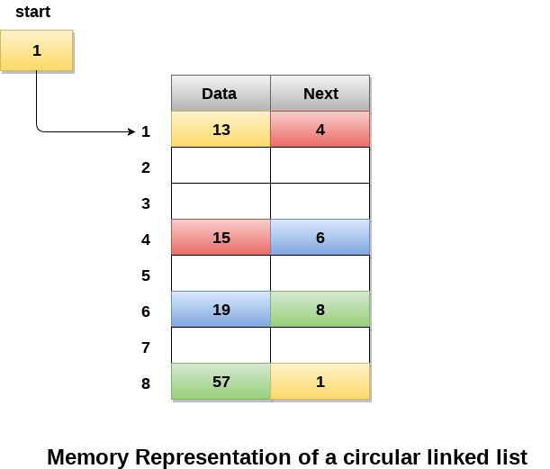

Circular Singly Linked List
a circular Singly linked list, the last node of the list contains a pointer to the first node of the list. We can have circular singly linked list as well as circular doubly linked list.
We traverse a circular singly linked list until we reach the same node where we started. The circular singly liked list has no beginning and no ending. There is no null value present in the next part of any of the nodes.
The following image shows a circular singly linked list.

Circular linked list are mostly used in task maintenance in operating systems. There are many examples where circular linked list are being used in computer science including browser surfing where a record of pages visited in the past by the user, is maintained in the form of circular linked lists and can be accessed again on clicking the previous button.
Memory Representation of circular linked list:
In the following image, memory representation of a circular linked list containing marks of a student in 4 subjects. However, the image shows a glimpse of how the circular list is being stored in the memory. The start or head of the list is pointing to the element with the index 1 and containing 13 marks in the data part and 4 in the next part. Which means that it is linked with the node that is being stored at 4th index of the list.
However, due to the fact that we are considering circular linked list in the memory therefore the last node of the list contains the address of the first node of the list.
